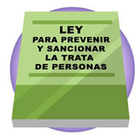

Información detallada, prevención, leyes y casos reales
¿Qué es la trata de personas?
La trata de personas es un delito que consiste en captar, transportar o retener
a una persona mediante engaño, amenazas o violencia con fines de explotación.
Es considerada una forma moderna de esclavitud.
Las víctimas pueden ser mujeres, hombres, niñas y niños. Los tratantes suelen
usar falsas promesas de empleo, estudios, relaciones amorosas o mejores
condiciones de vida.
Datos importantes:
Es uno de los delitos más lucrativos del mundo.
La mayoría de las víctimas son mujeres y menores de edad.
Ocurre tanto en zonas rurales como urbanas.
Tipos de trata de personas
Explotación sexual
Obligan a la víctima a realizar actos sexuales sin su consentimiento.
Trabajo forzado
Personas obligadas a trabajar sin salario justo o bajo amenazas.
Explotación infantil
Niños utilizados para mendicidad, trabajos peligrosos o actividades ilícitas.
Matrimonio forzado
Personas obligadas a casarse sin su voluntad.
Tráfico de órganos
Extracción ilegal de órganos para su venta.
Señales de alerta
No pueden hablar libremente.
Alguien controla sus documentos.
Tienen miedo constante.
Trabajan largas jornadas sin descanso.
No conocen el lugar donde están.
¿Cómo prevenir la trata?
Verificar ofertas de trabajo.
No enviar documentos personales a desconocidos.
Informar a familiares antes de viajar.
Configurar privacidad en redes sociales.
Denunciar situaciones sospechosas.
Números de ayuda en México
📞 Emergencias: 911
📞 Denuncia anónima: 089
📞 Línea Nacional contra la Trata: 800 5533 000
Estos números están disponibles las 24 horas del día.
Ley que protege contra la trata
En México existe la Ley General para Prevenir, Sancionar y Erradicar
los Delitos en Materia de Trata de Personas, publicada en 2012.
Esta ley protege a las víctimas, establece sanciones severas para los responsables
y obliga a las autoridades a prevenir y combatir este delito.
Protección integral a víctimas.
Prisión para responsables.
Coordinación entre autoridades.
Campañas de prevención.

Casos Reales
México
Redes criminales han engañado jóvenes con falsas ofertas de trabajo.
Argentina
Organizaciones explotaban mujeres en centros clandestinos.
Europa
Migrantes obligados a trabajar en condiciones inhumanas.